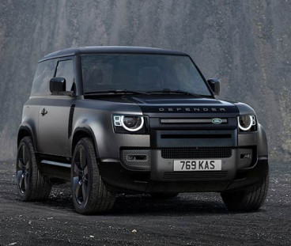

A programmer is someone who writes/creates computer software or applications by providing a specific programming language to the computer.
Most programmers have extensive computing and coding experience in many varieties of programming languages and platforms, such as Structured Query Language (SQL),
Perl, Extensible Markup Language (XML), PHP, HTML, C, C++ and Java.

The Land Rover Defender (initially introduced as the Land Rover 110 / One Ten, and in 1984 joined by the Land Rover 90 / Ninety, plus the new,
extra-length Land Rover 127 in 1985) is a series of British off-road cars and pickup trucks. They consistently have four-wheel drive, and were developed in the 1980s from the original Land Rover series which was launched at the Amsterdam Motor Show in April 1948. Following the 1989 introduction of the Land Rover Discovery, the term 'Land Rover' became the name of a broader marque, and thus no longer worked as the name of a specific model; thus in 1990 Land Rover renamed the 90 and 110 as Defender 90 and Defender 110 respectively. The 127 became the Defender 130.
The vehicle, a British equivalent of the Second World War derived (Willys) Jeep, gained a worldwide reputation for ruggedness and versatility. Using a steel ladder chassis and an aluminium alloy bodywork, the Land Rover originally used detuned versions of Rover engines.
The original Defender is still being produced in developing countries despite the arrival of the Land Rover Defender (L663)